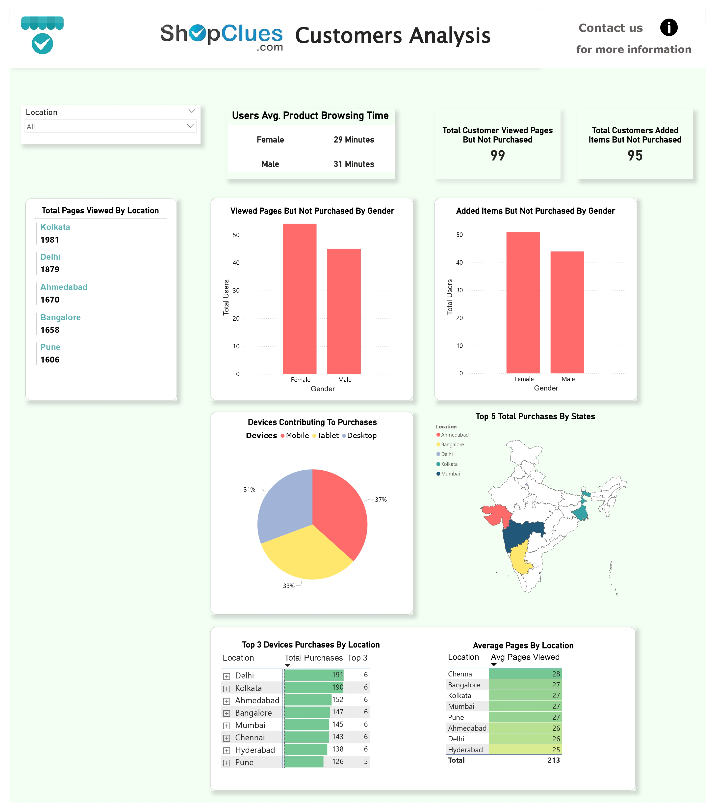

SHOPCLUES CUSTOMER ANALYSIS
E-COMMERCE

Project Background
ShopClues is a leading online marketplace in India that offers a wide variety of products to customers across the country. The company has a large customer base and is constantly looking for ways to improve the customer experience. In the dynamic landscape of Indian e-commerce, ShopClues has emerged as a significant player, providing a diverse range of products to a vast consumer base. Understanding customer behavior and preferences is crucial for any e-commerce platform to stay competitive and enhance user satisfaction. This analysis focuses on Shopclues e-commerce customer data related to devices in different cities of India and will help ShopClues to better understand its customers and their needs, so that the company can continue to grow and thrive in the competitive Indian e-commerce market.
Problem Statement:
Shopclues is looking to improve its understanding of its customers who purchase devices. The company wants to know what types of devices are most popular among its customers, what factors influence their purchasing decisions and how they use their devices. The company wants to identify any trends or patterns in customer behavior, such as which devices are becoming more or less popular over time. ShopClues plans to use this information to improve its marketing and sales efforts, such as by targeting specific devices and customer segments.
Objective:
- This objective aims to uncover insights into who ShopClues customers are (age, location, gender, etc.) and how they interact with the platform (purchase history, browsing patterns, preferred categories, etc.).
- By analyzing customer data, the project will segment customers into distinct groups based on shared characteristics and buying habits.
Contribution:
- This project will provide ShopClues with a deeper understanding of its customer base, leading to more effective marketing, product development, and customer service strategies.
- By analyzing customer data, the project provides valuable insights that can inform strategic decision-making across various departments including marketing, sales, product development, and customer service.
- Additionally, the project contributes to improving customer engagement and loyalty by enabling personalized marketing campaigns, targeted promotions, and enhanced customer support initiatives.
Scope:
- Data sources: The project will analyze data from ShopClues' customer database, including purchase history, browsing behavior, demographic information, and potential marketing campaign data.
- Tools and techniques: Utilize SQL for data querying and manipulation, and Power BI for data visualization and interactive dashboards.
Code:

Executive Summary:
Note: The Dashboard is Static just to have overall glimpse

- Among devices, mobile phones with a 37% share have surpassed both tablets and desktops. There is only a 2% difference between tablet and desktop usage with tablets contributing 33% to purchases and desktops 31%.
- The top 5 cities where people prefer to purchase devices through ShopClues are Ahmedabad, Bangalore, Kolkata and Mumbai.
- 95 customers added items to their cart but did not complete a purchase while 99 users viewed the pages without making any purchases.
- Kolkata shows significant interest in purchasing devices with a total of 1981 page views followed closely by Delhi with 1879 views. In contrast, Pune shows little interest with only 1606 pages viewed and the city does not rank among the top 5 for purchasing devices.
- Purchasing of devices in Delhi and Kolkata are 191 and 190 respectively in contrast to other cities whereas Pune has the lowest purchase of 126 total devices.
Solution:
To achieve the project objectives, a combination of SQL queries and Power BI visualizations is employed to analyze and visualize the customer data effectively. SQL queries are utilized to extract, transform, and clean the data from the Shopclues database, ensuring its accuracy and reliability for analysis. Power BI is then used to create interactive dashboards and reports that enable stakeholders to explore and visualize key metrics and insights derived from the data.
Recommendations:
- ◆ Since page views are higher in Kolkata, tailor content and promotions specific to their interests and preferences. This could involve region-specific offers, highlighting popular categories, or collaborating with local influencers.
- ◆ Optimize the mobile app and website for a seamless shopping experience. Ensure fast loading times, user-friendly interface, and secure payment options, as mobiles are the most popular device.
- ◆ Increase marketing efforts in Delhi, Kolkata, and Ahmedabad, while analyzing reasons for lower purchase rates in Hyderabad and Pune. Run targeted campaigns to address specific barriers in these locations.
- ◆ Understand why customers are viewing certain products but not buying them. Is it price, lack of information, or delivery concerns? Address these issues to improve conversion rates.
- ◆ Since mobiles are preferred, prioritize products with good mobile display and easy purchase options.
- ◆ Analyze why customers add items to their carts but don't complete the purchase. Offer cart saving incentives, simplify checkout process, and address any trust or security concerns.
Interactive Dashboard:
(Note: You can only filter with the below dashboard)